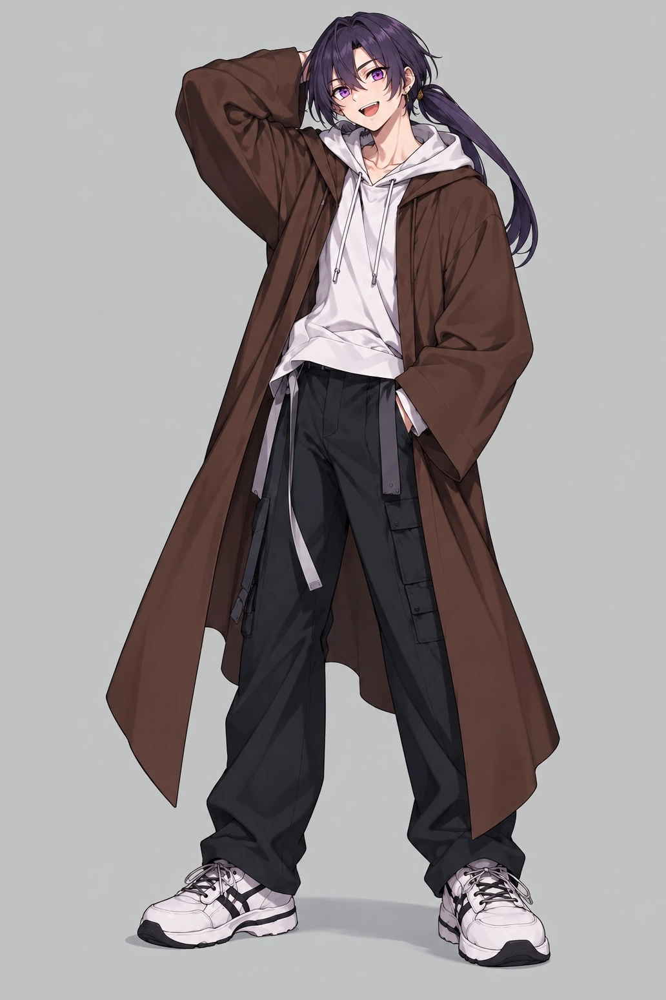

SELECT FIGHTERS
変更すると対戦をリセット

MASS CONTROLプラス G5
1500 / 1500
VS00:00
TEMPERATURE CONTROLX G5
1500 / 1500
IMPERIAL DUEL FIELD 01
EXHIBITION MATCH
プラス VS X
質量を操る転校生 × 温度を操る天才
P1 CONTROLフィールドをタップして移動
移動：フィールドをタップ / WASD・矢印 技：J・K・L OF：Space（1〜4も対応）
SKILL CUT-IN技の発動をここに表示
軽量連打READY
質量タックルREADY
スリングショットパンチREADY
✦ オーバーフロウHP30%
氷槍連射READY
炎の扇READY
温度差崩壊READY
✦ オーバーフロウHP30%